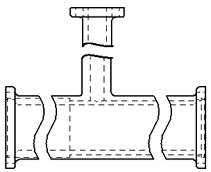
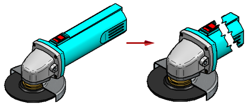
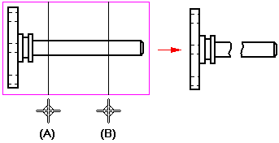
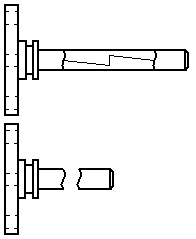
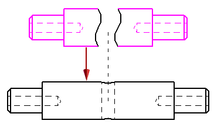

Broken View command
The Home tab→Drawing Views group→Broken View command  defines regions you want to remove in a part view. This creates a broken view of a long, slender part, so you can display it at a larger
scale.
defines regions you want to remove in a part view. This creates a broken view of a long, slender part, so you can display it at a larger
scale.

You can break a part horizontally and vertically in the same view.

You also can create a broken region in an isometric view of a part.

You can specify five different types of break lines.
Defining broken view regions
The Broken View command, which is also available from the drawing view shortcut menu, defines a pair of break lines for each region of the part you do not want to display. Use the options on the Broken View command bar to specify the break line orientation as horizontal or vertical to a drawing view edge, or as a break line defined by an axis between any two key points or linear elements in the drawing view.
You can define as many break line pairs as you want using the same break line orientation. After you have defined all the break line pairs, use the Finish button to generate the broken view.
For example, to remove the region as shown in the illustration on the right, you would define a break line pair as shown at (A) and (B).

Modifying broken views
You can modify a broken view by displaying and editing the break lines used to create it.
Use the Show Broken View button  on the Drawing View Selection command bar to display a previously defined broken view. When this button is deselected, the
view is displayed in the unbroken state.
on the Drawing View Selection command bar to display a previously defined broken view. When this button is deselected, the
view is displayed in the unbroken state.

You can control the visibility of the break lines using the Hide break lines in broken state option on the General page, Drawing View Properties dialog box. For more information, see Display break lines in a broken view.
Aligning break lines between drawing views
You can align the break lines in a source view with a principal, section, or auxiliary view that is folded from it using the Inherit Break Lines command. This copies the break lines from the broken view to the unbroken view. It also creates an associative relationship between the two views.

The associative relationship ensures that when the break lines in the source view are edited or deleted, the break lines in the folded view are also updated.
You can remove the associative relationship using the Remove Break Line Inheritance command, which is available on the shortcut menu of the folded view.
Dimensioning broken views
Add dimensions and annotations to the broken view after you define the broken view regions. Dimensions on a broken view reflect the actual length of the part.
How do I
Create a broken-out section viewModify a broken-out section view
Create a broken view
Break an isometric view with a break axis
Connect a break line at a distance
Display break lines and cropped edges in a broken view
Modify break lines in a broken view
Copy break lines between drawing views
Remove inherited break lines
Learn more
Broken viewsLook up more details
Broken-Out commandBroken View command bar
Inherit Break Lines command
Remove Break Line Inheritance command